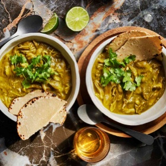

← All recipes
Instant Pot Green Chili Chicken

Servings: 4 to 6 servings · Prep: 15 mins · Cook: 25 mins
Ingredients
- 3 pounds bone-in, skin-on chicken thighs and drumsticks
- 1 pound poblano peppers, roughly chopped, seeds and stems discarded (about 3 peppers)
- 12 ounces tomatillos, husks discarded, quartered (about 4 tomatillos)
- 10 ounces white onion, roughly chopped (about 1 medium)
- 6 ounces Anaheim or Cubanelle peppers, roughly chopped, seeds and stems discarded (about 2 peppers)
- 2 Serrano or jalapeño peppers, roughly chopped, stems discarded
- 6 medium cloves garlic, peeled
- 1 tablespoon whole cumin seeds, toasted and ground
- Kosher salt
- 1/2 cup loosely packed fresh cilantro leaves and fine stems, plus more for garnish
- 1 tablespoon Asian fish sauce, such as Red Boat
- Fresh corn tortillas and lime wedges, for serving
Directions
- Combine chicken, poblano peppers, tomatillos, onion, Anaheim peppers, Serrano peppers, garlic, cumin, and a big pinch of salt in a pressure cooker. Heat over high heat until gently sizzling, then seal pressure cooker, bring to high pressure, and cook for 15 minutes. Release pressure.
- Using tongs, transfer chicken pieces to a bowl and set aside. Add cilantro and fish sauce to remaining contents of pressure cooker. Blend with an immersion blender or in a countertop blender and season to taste with salt. Return chicken to sauce, discarding skin and bones and shredding if desired.
- Transfer to a serving platter, garnish with chopped cilantro, and serve immediately with tortillas and lime wedges.
Original source: seriouseats.com